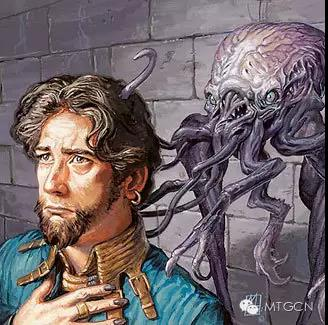
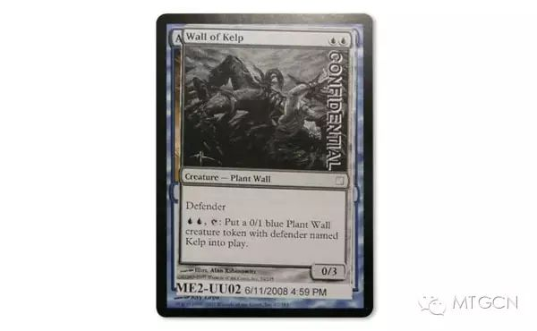
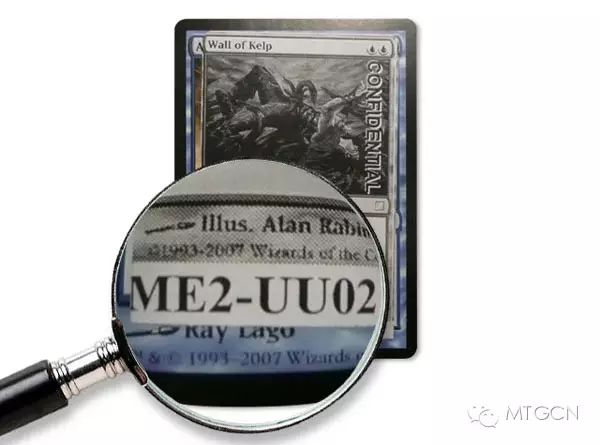
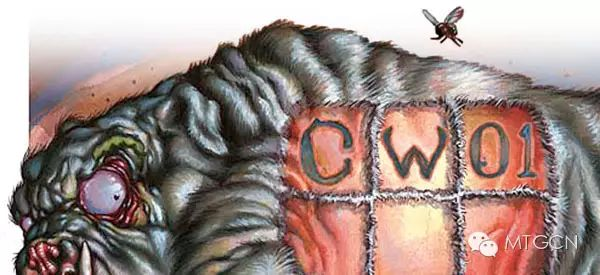
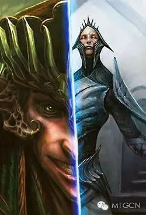
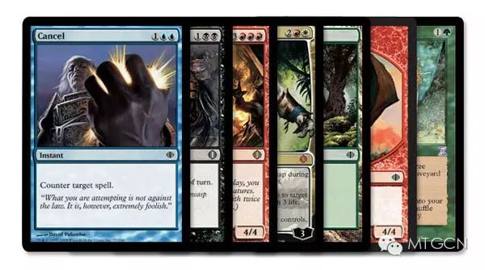
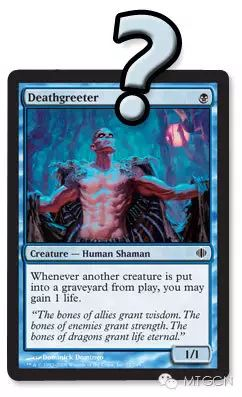
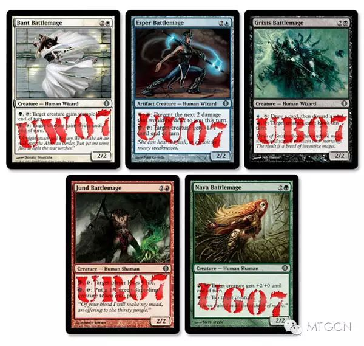

作者：Mark Rosewater
译者：Wolfgang.l@MTGCN
原文地址：https://magic.wizards.com/en/articles/archive/making-magic/nuts-bolts-card-codes-2009-01-12
译文地址：微信公众号@MTGCN
电视上演的百分之九十五的犯罪都是重罪，只有百分之五是轻罪。而现实生活中，情况恰好相反。那么为什么电视要这样描绘呢？因为谋杀的故事要比不遵守交通规则更吸引人。这样的结果就是歪曲了人们对世界的印象：世界是个危险的地方，电视告诉我们的，看看这些犯罪报道吧。

我提到这个话题是因为我觉得魔法设计院这个专栏有点误导的感觉。我大部分时间都讲的是卡牌的设计或者讨论颜色哲学什么的，虽然这一点在设计过程中很重要，但实际上却只占设计过程的很小一部分。大部分时间我们都花在了细节上，或者说螺母和螺栓的小问题上。换种比喻方式的话：设计师花的时间远比建筑工人建造房子的时间要短，花在粉刷墙壁或者凿钉子的事情上的时间要多于建筑师设计蓝图的时间。卡牌设计也是差不多。
意识到这件事之后，我兴起准备写个新的专栏系列文章叫做“螺母和螺栓”。在这个系列文中，我会讲一些对于设计过程至关重要的一些小细节，并讲解其中意义，目的是为了让你瞥视到小东西的重要性。新的研发部成员最陡峭的学习曲线之一就是吸收所有这些让整个过程进行下去的必要细节，在这些文章中，我会假设你一无所知，因为我真的不确定哪些事情你已经知道了而哪些事情你还不了解。
解读代码
今天的话题是卡牌代码：我刚才说过了——平凡却至关重要的小东西。那么什么是卡牌代码？我在我的专栏文中经常会给大家看一些测试卡牌。例如：

看见那一串字母和数字了吗？

就是这个。这就是我要说的东西，它就是卡牌代码。我先从最开始讲起吧。
什么是卡牌代码？

卡牌代码是一系列字母和数字（两个字母加两个数字），用于研发部门以及公司的其他部门区分每张卡牌。
为什么需要它？

在现实生活中，牌手们用牌名来指代一张牌。如果人们想说那张1G的写着“消灭目标神器或结界”的瞬间，就会用“回归自然”这个名字。这个方法行得通是因为印出来的卡牌是不会变的，回归自然只代表这一张牌（当然有误印的可能，不过先不提这个）。但在设计和开发过程中，卡牌们是在变动的，名字经常会变。许多牌都曾经用过许多设计名称，然后创意部门还会把名字改成适合发给插画师用的名称，最终定稿的名字可能还由于各种原因要改几次名字。
你甚至可以忘掉牌名，在设计和开发过程中，很经常整张牌都变了，有时候变成和我们一开始设计的完全不一样的牌。研发部门不能光从特定的一张牌的角度考虑，我们需要考虑一个卡位。例如，一个小系列有六十张普通牌。这就意味着每个颜色有十二个卡位（数学不好的同学，六十除以五等于十二）。对于研发部门来讲，白色有十二个普牌卡位。
卡牌代码的目的是标记一个卡位而不是特定的一张牌。卡牌可以来可以走，但CW01永远是第一张牌（从收集编号的角度说）。
这些字母和数字是什么意思？
让我们来详细看一下。我刚才用CW01举例了，所以就用这个来说明：
这个代码有三个独立的信息——
——第一个字母，第二个字母和两位数字。我会讲解每一个是什么意思，并且说明每一个都有哪些可能出现的字母或数字。
第一个字母
第一个字母是卡牌稀有度。稀有度很重要，因为对于生产部门来说，不同的稀有度就会去到不同的地方。（我不会讲到卡牌是怎么生产的，而是说研发部门怎么处理这些信息。）也就是说卡牌代码的第一个功能就是告诉大家这张牌的稀有度是什么。那么万智牌有几个稀有度呢？说真的，你们猜一猜。猜好了再看下一段。
你说三个？你忘了阿拉若开始有秘稀了吧？
你说四个？那么，你忘记了万智牌的大系列有五个稀有度，而不是四个。第五个是什么？基本地。他们比普通牌还要普通。
你说五个？那么你忘记了万智牌时常加入一些特别的稀有度，比如时间漩涡的“紫牌”。
你说六个？那你忘了补充包里还有一些有正常牌框但不是比赛用牌的牌了。是的，衍生物牌。他们也有自己的稀有度。（实际上，衍生物也分不同的稀有度的，不过在卡牌代码上只有一个稀有度来体现）。
是的，目前万智牌代码中，稀有度字符位有七个值：
C – 普通
U – 非普通
R – 稀有
M – 秘稀
L – 地（这里指基本地；所有其他地牌都属于上面四个稀有度。）
T – 衍生物
S – 特别（包括时间漩涡紫牌还有鸡飞2的Super Secret Tech。另外，时间漩涡在设计过程中本来使用B字母意思是“Bonus”的——因为我们之前没有先例，所以我就随便选了一个字母——不过在这个系列生产之前还是改了。）

第二个字母
那么第二个字母又代表什么？你是说颜色？对不起，回答错误。第二个字母实际上表示牌框，至少卡牌代码开始是这么设计的。第二个字母告诉生产部的同事需要用什么样的牌框。
我应当指出牌框自从Alpha之后就开始变得越来越复杂了，恰好两种颜色的多色牌现在有了特别的牌框，能生产一种或两种颜色的地也告诉你它们能产什么颜色，拉尼卡还引入了类似公会水印的东西。生产部已经不能仅仅靠卡牌代码来识别牌框了，不过它还是可以起到一定的识别作用。
以下是目前可用的第二位代码值：
W – 白色
U – 蓝色
B – 黑色
R – 红色
G – 绿色
Z – 多色
X – 连体牌（指非单色的连体牌。时空混沌的纯红连体牌用的是R。）
A – 神器（这是指传统的无色神器。有色神器除了跨公会讯使和夺命王者，都是使用相应的颜色代码。）
L – 地

在继续讲下去之前，我想说一下蓝色。我们的老牌手们可能已经忘了U代表蓝色是多么奇怪了，但我知道新牌手第一次看见的时候肯定觉得很诡异。为什么蓝色是U？为了让卡牌代码起作用，每个字母在其所属范围内必须是独特的（在第一个和第二个字母之间则可以相同，这也是为什么U既是蓝色又是非普通，R既是红色又是稀有）。蓝色和黑色都是B开头的词，这也就意味着其中一个必须换一个字母。
两个词的第二个字母都是L。我刚才也说了，L是地的意思。我们是尽量优先选择一个词的第一个字母的，所以地还是要用L的。黑色第三个字母是A，A是留给神器的。因此就剩下蓝色的U和E，以及黑色的C和K。（在早年间，威世智公布这些字母之前，有一些牌手是用K代表黑色的。）但为什么我们最终使用了U？仅仅是因为它出现的位置比黑色的C或K早。
最后说明一点，以上牌框代码是按照在文件里面的顺序排列的。单色（按照WUBRG的顺序，意思是white/blue/black/red/green，研发部作“wooberg”）然后是多色然后是连体牌然后是神器然后是地。
两位数字
数字的规则很简短：
#1 – 数位永远是两位。 这一条规则的理由很简单：它可以帮你确认没有信息丢失。如果你看见CW1，你不知道是不是白色第一张普通牌，或许是第十张，0被丢掉了。目前的的系统你永远知道你的信息是完整的。这个规则最大的派生规则就是，前九张牌永远是0_，例如01或09。
#2 – 编号永远从01开始。 这个数值的意义在于可以告诉你在一个特定的稀有度/牌框组合中有多少个卡位。最大的数字不管是几都可以告诉你在这个子区域里面有多少张牌。这个信息对于设计和开发来说很方便并经常被用到。
#3 – 从生产角度看，顺序是任意的。 只要白色普通牌有十二张，那就不用管哪张是哪个编号。虽说没有什么问题，但研发部对此有自己的小规则：
A – 生物优先于非生物。 设计和开发部门经常做的一件事就是检查特定颜色特定稀有度的生物数量是多少。为了帮助我们进行这个过程，我们总是把生物放在前面排列。
B – 卡组用相同的数字分组。 为了寻找卡组，一个小技巧就是把它们编成同样的数字。例如我们有一个卡组是C费用的1/1（C代表相应的颜色），我们就把它们都放在01卡位上。我们不总是严格遵守这条规则，但如果可能我们还是会这样做。上面的A规则和这条规则有时候让我们很头痛，因为生物和非生物的比例在不同颜色中是不同区分的。

C – 争夺同一卡位的牌使用相同的编号。 研发部经常用的一个小伎俩是把几张牌放到一个卡牌代码位置上，以示“这些牌不能都进入系列，所以我们得测试一下”。这也防止首席设计师总是说这些牌太相近了。
D – 卡牌在其子区域内（生物/非生物）按照费用从低到高排列。 这又是一个不严格遵守的守则，但首席设计师整理文件的时候，这种方式可以很好的看清楚系列的法术力曲线情况。
E – 单一牌框的卡组（通常是神器和地）按照连续顺序排列，永远是WUBRG顺序。 可归为连续一组的卡组总是以此方式排列，所有的神器和地都是连续的放在一起的。另外，所有牌都只要可能的情况下都是按照WUBRG的顺序排列的。当你设计一个地牌卡组或者和颜色相关的神器卡组时，也依次处理。
当研发部拿出一份文件开始编辑的时候，这些卡牌代码总是连续的，但研发部特别设定了几个两位数代码代表了一些额外的含义。这些代码只在设计和开发过程中使用，在文件交给任何其他部门之前都会去掉。这些代码是：
99 – 这个是用的最频繁的一个代码。意思是这张牌已经被从这个系列中砍掉了，但不确定今后会不会再用上。“99掉一张牌”是一个研发部的黑话，表示某牌被移除了。（“肥妖精哪儿去了？”“99掉了。”）
88 – 这个代码意思是这张牌在文件中还没有正式被列入，但我们有可能给它找到一个位置。和99的区别就是，88是有可能进来，而99是要出去了。
33, 44, 55, 66, 77 – 在设计过程中，我把这些代码分配给组里的不同设计师（每位设计师一个号码）。当他们加入可能的卡牌时，他们就用他们自己的代码。这也让我知道是哪个组员提交了哪张牌。
00 – 这个代码是泛用注释代码，大多数情况下文件都以CW00开头，但在少数情况下我们也会在特定的区域开头加上00注释。
10, 20, 30, 40, 50 – 最后这些卡牌代码的创意用法是来自于暗影荒原的研发过程中。当混血牌首次在拉尼卡出现时，一直用的是Z代码，毕竟文件里只有12张混血牌。但我们开始设计暗影荒原的时候问题出现了，系列的一半都是混血牌，也就是说一半都是Z代码牌。设计和研发部门怎么能区分{W/U}还是{U/B}还是{B/R}还是{R/G}还是{G/W}呢？我刚才说过了，设定清晰的子集对于研发部门的工作是很关键的。解决方案就是让所有{W/U}的牌都是10后面的，所有{U/B}都是20几的，{B/R}是30几的，{R/G}是40几的，{G/W}是50几的。这样不管研发部门的人员什么时候看暗影荒原的文件，都立刻能知道他们看的是什么混血色组。暮光引入对色混血时也用了一样的系统。
红色代码（还有白色蓝色黑色和绿色）
以上就是卡牌代码的所有知识了。
我今天的目标就是展示给大家一些小事情为什么会是研发过程中的重要工具——以至于卡牌编码发展出了自己的结构和语言体系。
让我们以下面这个问题结束今天的专栏：你喜欢今天的专栏文吗？你喜欢听我讲这些让设计游戏变得如此有趣的小事情吗？或者很无聊不值得写出来？我是否应该忘掉这些不遵守交通规则的小事，而只写谋杀案件？我很想知道，因为我不知道这种东西大家爱不爱看。我写了这篇专栏是因为我觉得只能通过写一篇专栏才能知道大家的反馈如何，所以欢迎大家反馈！螺母和螺栓，要不要继续写下去？（译注：也请大家给我反馈，要不要继续译下去？）
希望大家都能理解小事情的重要性，下次再见。
Mark Rosewater
欢迎关注MTGCN订阅号！在这里你可以看到最全面的万智牌背景故事、卡牌设计、卡牌插画、花边趣闻等的内容。希望能将万智牌丰富的内涵全面地展现给大家，而不止是比赛的那一面！